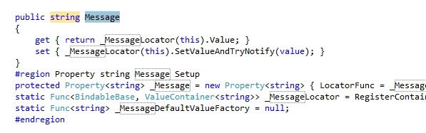

跟班儿问世篇
1. 安装模板包
MVVM-Sidekick VS Extension only supports VS2012 now.
MVVM跟班儿的VS扩展目前只支持VS2012.
You can downloaded here.
你可以在此下载
[http://visualstudiogallery.msdn.microsoft.com/ef9b45cb-8f54-481a-b248-d5ad359ec407
If the link is outdated, try search 'MVVM-Sidekick' on your 'Extensions and Updates' manager (TOOLS MENU).
如果链接失效,请尝试在你的VS2012工具菜单下的"扩展与更新"管理器中搜索"MVVM-Sidekick".
2. 创建新跟班儿项目
After you install the VS extension, you can create a new MVVM-Sidekick project.
安装过了模板扩展，你就可以创建新工程了
Now we support WP8, Silverlight 5, WPF 4.5 ,Windows Store platforms.
目前我们支持 WP8 SL5 WPF 4.5 和 Windows Store
You can find our Project Template in each catalog we supported.
在各个支持平台的分类中 你可以找到MVVM-Sidekick工程
And you can search 'MVVM' on the top-left Textbox.
你也可以在右上角搜索MVVM

After you create this project, press F5, if your template works well, you may meet your Mainpage.
按下F5 你就可以看到首页了

本框架需要代码块辅助开发
If your "Documents" Folder is not in path "c:\", the nuget installation might not working properly. Please install the snippet manually in Tools->Code snippets Menu. Default path is
Packages/[MVVM-Sidekick Folder]/MVVM.snippet
如果你的“文档”文件夹不在默认安装的C:盘，有可能Nuget的自动安装可能不能正确的定位，需要您手动在 VS的
工具->代码片段中添加这个路径：
Packages/[MVVM跟班儿路径]/MVVM.snippet
Supported snippets:
支持如下常用代码块：
| propvm | New Propery In Model | 在MVVMSidekick Binable/ViewModel 中增加属性 |
| propcmd | New Command In Model | 在MVVMSidekick Binable/ViewModel 中增加命令 |
example:
> propvm +tab +tab
安装过代码块后，你就可以在 View Model 里面添加逻辑了。
在 View Model 添加简单的逻辑
添加一个属性
Open view model code file in folder \ViewModels\.
打开
\ViewModels\路径的VM代码文件。
Usually, MainPage_Model.cs would be the default view model for the start up screen.
一般来说, 开始第一屏的VM代码是
MainPage_Model.cs.
Move you cursor into class MainPage_Model and input propvm [tab] [tab]
将光标移动到
MainPage_Model类中，输入propvm [tab] [tab]
Input property type string and tab again, then input property name Message.
跟随着光标位置 输入
string作为属性类型，然后输入属性名Message

添加一个命令
propcmd [tab] [tab]
输入
propcmd [tab] [tab]
CommandChangeMessage
输入命令名
CommandChangeMessage

- Remove the `//` comment before `cmd.Subscribe...`, then add code into as below.
>移除代码中`cmd.Subscribe...`这一行的注释，修改为如下的内容
csharp
cmd.Subscribe(_ => { CastToCurrentType(model).Message = "Hello ! MVVM World!"; }).DisposeWith(model);
将逻辑绑定到控件
MainPage.xaml in designer.打开
MainPage.xaml
Drag a Text Box control into view from tool box, adjust the position and size.
Locate Text in Property window, click the small square box over right, chose Create Data binding,select
MainPage.xaml is usually the default entrance in a XAML application.